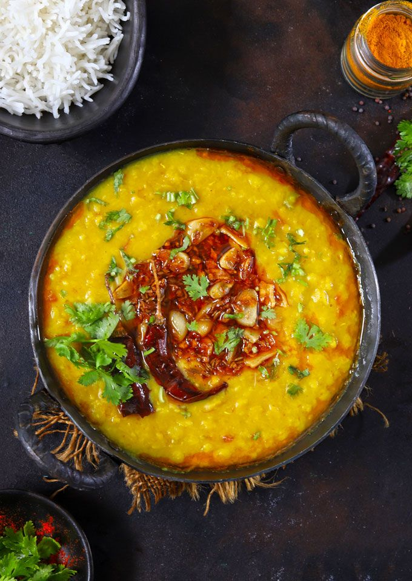

Recipe
Ingredients:
- Toor dal (yellow lentils)
- Ghee
- Garlic
- Green Chillies
- Onion
- Cumin seeds
- Spices: Garam masala, red chili powder, turmeric, coriander powder
Nutrients:
- Protein: Lentils are an excellent plant-based protein source.
- Healthy Fats: Ghee adds healthy fats.
- Fiber: Lentils are rich in dietary fiber
Health Benefits:
- Supports heart health due to the fiber and healthy fats in ghee.
- Aids in digestion due to fiber content.
- Provides steady energy from complex carbohydrates.
Process
Cook yellow lentils (toor dal) in a pressure cooker with water, turmeric, and salt. In a separate pan, heat ghee (clarified butter), then add cumin seeds, garlic, green chilies, and onions. Once the onions are golden brown, pour the tempering (tadka) over the cooked dal.
Garnish with fresh cilantro and serve with rice or roti.
Leave a comment